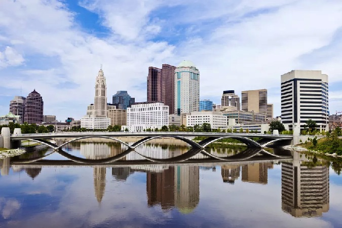

Columbus is the state capital and the most populous city in the U.S. state of Ohio. With a 2020 census population of 905,748, it is the 14th-most populous city in the U.S., the second-most populous city in the Midwest, after Chicago, and the third-most populous state capital. Columbus is the county seat of Franklin County; it also extends into Delaware and Fairfield counties. It is the core city of the Columbus metropolitan area, which encompasses ten counties in central Ohio. The metropolitan area had a population of 2,138,926 in 2020, making it the largest entirely in Ohio and 32nd-largest in the U.S.
Columbus originated as numerous Native American settlements on the banks of the Scioto River. Franklinton, now a city neighborhood, was the first European settlement, laid out in 1797. The city was founded in 1812, at the confluence of the Scioto and Olentangy rivers, and laid out to become the state capital. The city was named for Italian explorer Christopher Columbus. The city assumed the function of state capital in 1816 and county seat in 1824. Amid steady years of growth and industrialization, the city has experienced numerous floods and recessions. Beginning in the 1950s, Columbus began to experience significant growth; it became the largest city in Ohio in land and population by the early 1990s. The 1990s and 2000s saw redevelopment in numerous city neighborhoods, including downtown.
The city has a diverse economy based on education, government, insurance, banking, defense, aviation, food, clothes, logistics, steel, energy, medical research, health care, hospitality, retail, and technology. The metropolitan area is home to the Battelle Memorial Institute, the world's largest private research and development foundation; Chemical Abstracts Service, the world's largest clearinghouse of chemical information; and the Ohio State University, one of the largest universities in the United States. As of 2022, the Greater Columbus area is home to the headquarters of six corporations in the U.S. Fortune 500: Cardinal Health, American Electric Power, L Brands, Nationwide, Alliance Data, and Huntington Bancshares.